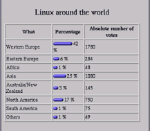
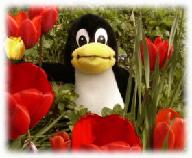

  GNU, la Free Software Foundation, Redhat y, desde hace algún tiempo, incluso Linus Torvards, están todos en los Estados Unidos. Da la impresión de que Linux y el software libre son algo "made in USA". La pregunta del último mes, Linux por el mundo, mostró algunos resultados interesantes. Confirman que Linux y el software libre es realmente un movimiento internacional. Nos alegramos mucho de esto, puesto que revela la importancia de sitios web internacionales, y muestran que aquellos que piensan en un LinuxFocus unicamente en Inglés sería suficiente están en realidad equivocados.
No tenemos más que decir, salvo que disfruteis leyendo este número, que de hecho es bastante extenso :-)
 Probando KDE 3
, por Lorne Bailey
GNUMail.app, la evidencia de la portabilidad
, por Georges Tarbouriech
Descubre el Universo
, por Katja Socher
Empezando a conocer el XML
, por Floris Lambrechts
Editing DocBook XML Documents
,por Egon Willighagen
Un panel de control LCD para tu servidor Linux
, por Guido Socher
Reemplazar un servidor Windows NT/2000 utilizando Linux y SAMBA
, por Sebastian Sasías
Introducción a la criptografía
, por Pierre Loidreau
Usando una Minolta Dimage 5 bajo Linux
, por Guido Socher
Probando KDE 3
, por Lorne Bailey
GNUMail.app, la evidencia de la portabilidad
, por Georges Tarbouriech
Descubre el Universo
, por Katja Socher
Empezando a conocer el XML
, por Floris Lambrechts
Editing DocBook XML Documents
,por Egon Willighagen
Un panel de control LCD para tu servidor Linux
, por Guido Socher
Reemplazar un servidor Windows NT/2000 utilizando Linux y SAMBA
, por Sebastian Sasías
Introducción a la criptografía
, por Pierre Loidreau
Usando una Minolta Dimage 5 bajo Linux
, por Guido Socher
¿Cómo deshabilitar la tecla de bloqueo de mayúsculas?
¿Te desesperas cuando, accidentalmente golpeas la tecla de bloqueo
de mayúsculas de tu teclado? Bajo X11 resulta muy facil cambir la
tecla de bloque de mayúsculas con cualquier otra. Puedes convertirla,
por ejemplo, en la tecla de escape (Esc). Hay dos formas de hacerlo:
!lf-tip: change Caps_Lock to Escape clear lock keycode 66 = Escapeque funcionará la próxima vez que hagamos un login.
xmodmap -e "clear lock" xmodmap -e "keycode 66 = Escape"que podemos incluir en .xinitrc o /usr/X11R6/lib/X11/xinit/xinitrc para que se ejecuten durante el arranque de X11.
xmodmap -pm xmodmap -pkeY si queremos ver que código de teclado es generado por que tecla podemos arrancar el programa xev. Segun el tipo de teclado, el bloqueo de mayúsculas puede generar un código de teclado diferente (no el 66). Mediante xev podemos determinar este código de teclado.
|
© 2002 LinuxFocus Página de contacto con LinuxFocus |